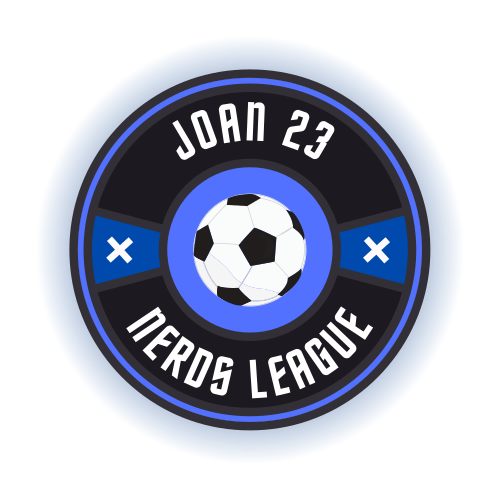

¡BIENVENIDOS A LA NERD'S LEAGUE!

¿Qué es?
La Nerds league es LA LIGA de DAW2 Y SMX2 compuesta por los Alumnos de ambas clases. Este torneo decidirá que clase tiene mayor nivel futbolístico, y demostrará que clase es mejor tras aquel partido multitudinario que inició todo. Para ello, los equipos se enfrentarán todos los lunes y jueves de las semanas lectivas en una liga donde todos lucharan por la victoria, intentando obtener el mayor numero de puntos para conseguir llegar a las NERDS FINALS, donde el equipo campeón levantará el "trofeo" (Entre comillas porque no hay trofeo).
Reglamento
- Los encuentros se disputarán los días mencionados de 18.45 a 19.05 en la pista del patio que haya disponible, siempre eligiendo la mejor de ellas.
- Se disputarán con un máximo de 5 jugadores en el campo (4 de campo y 1 portero), el resto estarán de suplentes.
- Los cambios pueden ser en cualquier momento del partido sin aviso.
- Los partidos podrán ser suspendidos en caso de lluvia o aviso previo del capitán de cada equipo por el grupo bajo un motivo justificado (No presencia en clase, huelga...). Estos partidos se jugarán al término de la liga, pudiendo aplazar las fechas de las finales para que todos los equipos jueguen el mismo número de partidos.
- Cualquier novedad o problema lo deberán de comunicar los capitanes por el grupo de whatsapp.
- La no presencia sin previo aviso 24H del partido significará la pérdida 3-0 del partido.